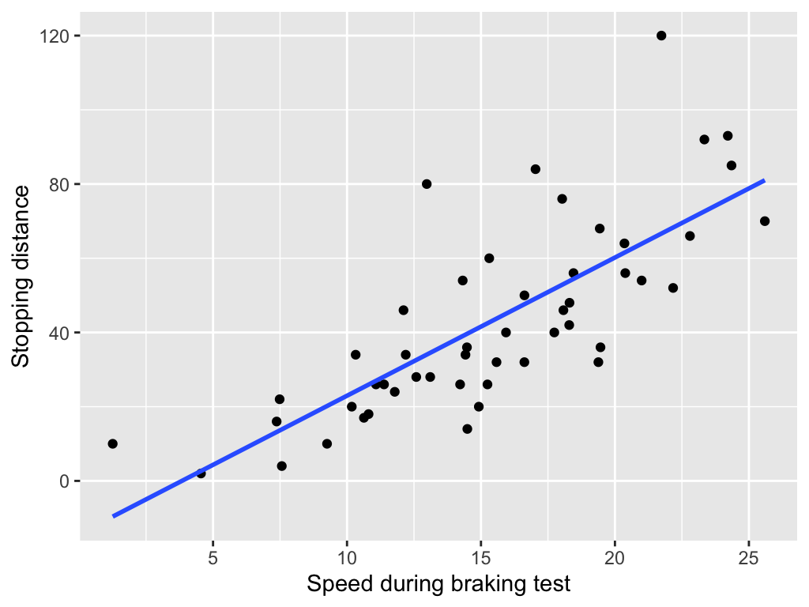
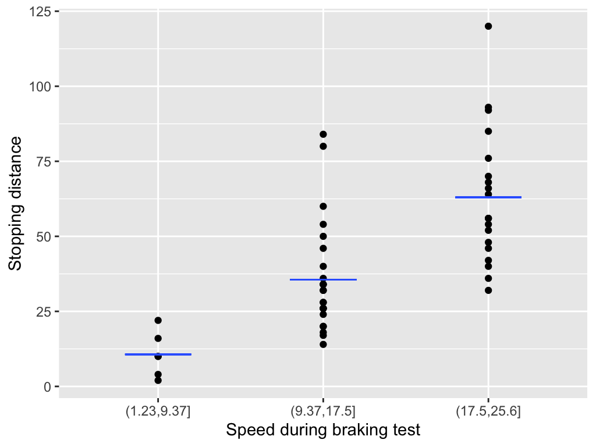
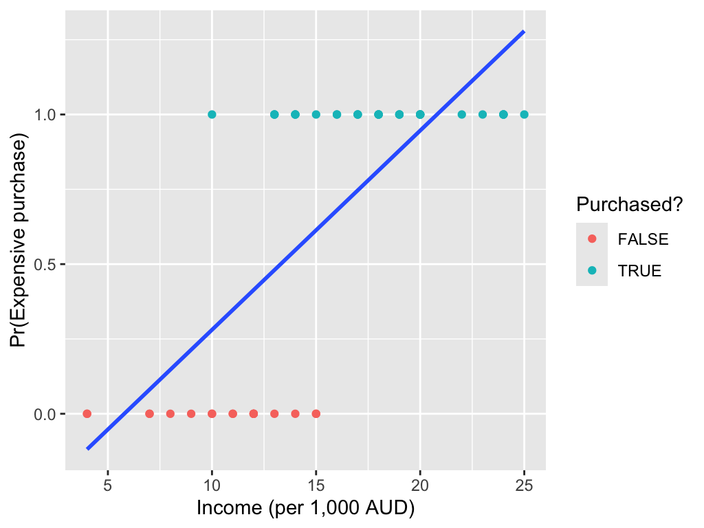
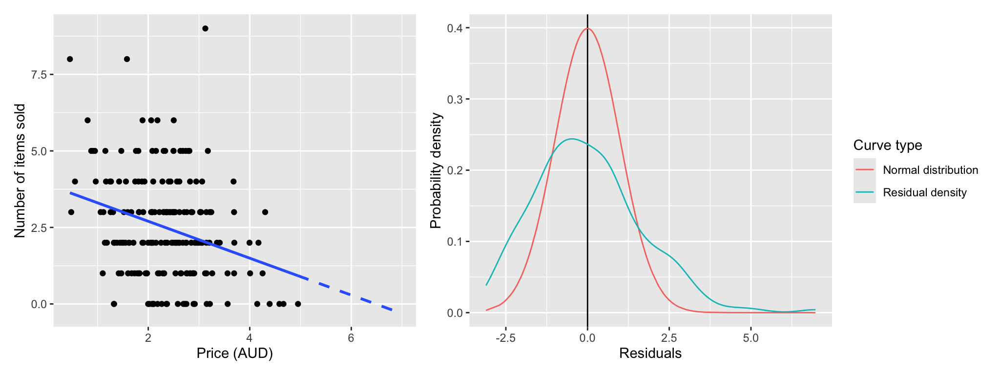

Generalized linear model
Future Crops Statistical Workshop
Patrick Li
RSFAS, ANU
Content summary
- Review of linear model
- Motivation: why beyond linear model?
- Generalized linear model
- Example: GTA analysis
Review of linear model
Linear model
We use linear model (LM) to find the linear relationships between predictor(s) X and a response variable Y.
When the predictor is numerical, the LM fits a straight line through the data that best predicts Y from X.
When the predictor is categorical, the LM estimates the mean of Y for each group or level.

Simple linear model
Mathematically, a simple linear model can be written as
y_i = \beta_0 + \beta_1 x_i + \varepsilon_i, \quad \varepsilon_i \sim N(0, \sigma^2), \quad i = 1, \dots, n,
where \varepsilon_i represents the random error term, the part of y_i that the model cannot explain from x_i.
Maximum likelihood estimation
For a given intercept \hat{\beta}_0 and slope \hat{\beta}_1, the likelihood L(\boldsymbol{\beta}) quantifies how well the observed data fit the model. We can obtain the optimal \hat{\beta}_0 and \hat{\beta}_1 by maximizing L(\boldsymbol{\beta}):
(\hat{\beta}_0, \hat{\beta}_1) = \arg\max_{\beta_0, \beta_1} L(\boldsymbol{\beta}),
which is called maximum likelihood estimation (MLE).
Use the sliders to find the optimal Intercept and Slope!
function loglik_profile(beta0, beta1, x, y) {
const n = y.length;
const residuals = y.map((yi, i) => yi - (beta0 + beta1 * x[i]));
const s2 = residuals.reduce((sum, r) => sum + r * r, 0) / n;
return - (n / 2) * Math.log(s2);
}
function makeGrid(x, y) {
const grid = [];
for (let beta0 = -70; beta0 <= 70; beta0 += 1) {
for (let beta1 = -10; beta1 <= 10; beta1 += 0.1) {
const ll = loglik_profile(beta0, beta1, x, y);
grid.push({ Intercept: beta0, Slope: beta1, loglik: ll });
}
}
return grid;
}
cars_row = transpose(cars_2);
x = cars_row.map(d => d.speed)
y = cars_row.map(d => d.dist)
grid = makeGrid(x, y);
Plot.plot({
marks: [
Plot.raster(grid, {x: "Intercept", y: "Slope", fill: "loglik", interpolate: "nearest"}),
Plot.dot([[beta_0, beta_1]], {fill: "black"}),
Plot.text([[beta_0, beta_1]], {text: [`${loglik_profile(beta_0, beta_1, x, y).toFixed(3)}`], textAnchor: "start", dx: 10, fontSize: 15})
],
color: {
legend: true,
scheme: "Viridis",
label: "Log-likelihood",
width: 280
},
grid: true,
height: 300,
width: 300,
inset: 10
})Why linear models aren’t enough
Just because a cat can fit into a glass doesn’t mean the cat is glass-shaped!
{kind=link}
We don’t use linear models because they are truly “correct”. In most cases, they’re not.
We use them mainly because of:
- Convenience
- Good enough as an approximation
- Familiarity
- Computational feasibility
- … and other practical reasons
Motivation: Why go beyond linear models?
Binary data
Fitting a linear model is often inappropriate for many types of response variables. For example, with binary data:
Linear models can predict probabilities outside the [0, 1] range.

Count data
With count data:
Linear models don’t work well for low-count data because they can’t capture its skewed shape and may produce negative predicted values.

Generalized linear model
Exponential family
Generalized linear models provide a flexible framework for modeling data whose distribution belongs to the exponential family.
viewof distribution = Inputs.select(
["Normal", "Exponential", "Gamma", "Beta", "Poisson", "Bernoulli", "Binomial", "Negative Binomial", "Geometric", "Multinomial", "Chi-squared", "Inverse Gamma"],
{
label: "Distribution",
value: "Normal"
}
)
// Cell 2: Sample size
viewof n = Inputs.range([100, 10000], {
label: "Sample Size",
step: 100,
value: 1000
})
// Cell 3: Normal parameters
viewof mu = Inputs.range([-5, 5], {
label: tex`\mu \text{ (mean)}`,
step: 0.1,
value: 0
})
// Cell 4
viewof sigma = Inputs.range([0.1, 5], {
label: tex`\sigma \text{ (std dev)}`,
step: 0.1,
value: 1
})
// Cell 5: Exponential parameter
viewof lambda_exp = Inputs.range([0.1, 5], {
label: tex`\lambda \text{ (rate)}`,
step: 0.1,
value: 1
})
// Cell 6: Gamma parameters
viewof shape = Inputs.range([0.1, 10], {
label: tex`\alpha \text{ (shape)}`,
step: 0.1,
value: 2
})
// Cell 7
viewof rate = Inputs.range([0.1, 10], {
label: tex`\beta \text{ (rate)}`,
step: 0.1,
value: 1
})
// Cell 8: Beta parameters
viewof alpha = Inputs.range([0.1, 10], {
label: tex`\alpha`,
step: 0.1,
value: 2
})
// Cell 9
viewof beta = Inputs.range([0.1, 10], {
label: tex`\beta`,
step: 0.1,
value: 5
})
// Cell 10: Poisson parameter
viewof lambda_pois = Inputs.range([0.1, 20], {
label: tex`\lambda \text{ (rate)}`,
step: 0.1,
value: 3
})
// Cell 11: Bernoulli parameter
viewof p = Inputs.range([0, 1], {
label: tex`p \text{ (probability)}`,
step: 0.01,
value: 0.5
})
// Cell 12: Binomial parameters
viewof n_binom = Inputs.range([1, 50], {
label: tex`n \text{ (trials)}`,
step: 1,
value: 10
})
// Cell 13
viewof p_binom = Inputs.range([0, 1], {
label: tex`p \text{ (probability)}`,
step: 0.01,
value: 0.5
})
// Cell 14: Negative Binomial parameters
viewof r_negbinom = Inputs.range([1, 50], {
label: tex`r \text{ (successes)}`,
step: 1,
value: 5
})
// Cell 15
viewof p_negbinom = Inputs.range([0, 1], {
label: tex`p \text{ (probability)}`,
step: 0.01,
value: 0.5
})
// Cell 16: Geometric parameter
viewof p_geom = Inputs.range([0.01, 1], {
label: tex`p \text{ (probability)}`,
step: 0.01,
value: 0.3
})
// Cell 17: Multinomial parameters
viewof n_multinom = Inputs.range([1, 100], {
label: tex`n \text{ (trials)}`,
step: 1,
value: 20
})
// Cell 18
viewof p1_multinom = Inputs.range([0, 1], {
label: tex`p_1`,
step: 0.01,
value: 0.33
})
// Cell 19
viewof p2_multinom = Inputs.range([0, 1], {
label: tex`p_2`,
step: 0.01,
value: 0.33
})
// Cell 20: Chi-squared parameter
viewof df_chisq = Inputs.range([1, 30], {
label: tex`k \text{ (degrees of freedom)}`,
step: 1,
value: 5
})
// Cell 21: Inverse Gamma parameters
viewof shape_invgamma = Inputs.range([0.1, 10], {
label: tex`\alpha \text{ (shape)}`,
step: 0.1,
value: 2
})
// Cell 22
viewof scale_invgamma = Inputs.range([0.1, 10], {
label: tex`\beta \text{ (scale)}`,
step: 0.1,
value: 1
})
// Cell 23: Control visibility of parameters
_display = {
viewof mu.style.display = distribution === "Normal" ? "flex" : "none";
viewof sigma.style.display = distribution === "Normal" ? "flex" : "none";
viewof lambda_exp.style.display = distribution === "Exponential" ? "flex" : "none";
viewof shape.style.display = distribution === "Gamma" ? "flex" : "none";
viewof rate.style.display = distribution === "Gamma" ? "flex" : "none";
viewof alpha.style.display = distribution === "Beta" ? "flex" : "none";
viewof beta.style.display = distribution === "Beta" ? "flex" : "none";
viewof lambda_pois.style.display = distribution === "Poisson" ? "flex" : "none";
viewof p.style.display = distribution === "Bernoulli" ? "flex" : "none";
viewof n_binom.style.display = distribution === "Binomial" ? "flex" : "none";
viewof p_binom.style.display = distribution === "Binomial" ? "flex" : "none";
viewof r_negbinom.style.display = distribution === "Negative Binomial" ? "flex" : "none";
viewof p_negbinom.style.display = distribution === "Negative Binomial" ? "flex" : "none";
viewof p_geom.style.display = distribution === "Geometric" ? "flex" : "none";
viewof n_multinom.style.display = distribution === "Multinomial" ? "flex" : "none";
viewof p1_multinom.style.display = distribution === "Multinomial" ? "flex" : "none";
viewof p2_multinom.style.display = distribution === "Multinomial" ? "flex" : "none";
viewof df_chisq.style.display = distribution === "Chi-squared" ? "flex" : "none";
viewof shape_invgamma.style.display = distribution === "Inverse Gamma" ? "flex" : "none";
viewof scale_invgamma.style.display = distribution === "Inverse Gamma" ? "flex" : "none";
}generators = {
const normalGen = (mu, sigma) => {
const u1 = Math.random();
const u2 = Math.random();
const z = Math.sqrt(-2 * Math.log(u1)) * Math.cos(2 * Math.PI * u2);
return mu + sigma * z;
};
const gammaGen = (shape, rate) => {
if (shape < 1) {
return gammaGen(shape + 1, rate) * Math.pow(Math.random(), 1 / shape);
}
const d = shape - 1/3;
const c = 1 / Math.sqrt(9 * d);
while (true) {
let x, v;
do {
x = normalGen(0, 1);
v = 1 + c * x;
} while (v <= 0);
v = v * v * v;
const u = Math.random();
if (u < 1 - 0.0331 * x * x * x * x) return d * v / rate;
if (Math.log(u) < 0.5 * x * x + d * (1 - v + Math.log(v))) return d * v / rate;
}
};
return {
normal: normalGen,
exponential: (lambda) => -Math.log(1 - Math.random()) / lambda,
gamma: gammaGen,
beta: (alpha, beta) => {
const x = gammaGen(alpha, 1);
const y = gammaGen(beta, 1);
return x / (x + y);
},
poisson: (lambda) => {
const L = Math.exp(-lambda);
let k = 0, p = 1;
do {
k++;
p *= Math.random();
} while (p > L);
return k - 1;
},
bernoulli: (p) => Math.random() < p ? 1 : 0,
binomial: (n, p) => {
let sum = 0;
for (let i = 0; i < n; i++) {
if (Math.random() < p) sum++;
}
return sum;
},
negativeBinomial: (r, p) => {
let failures = 0;
let successes = 0;
while (successes < r) {
if (Math.random() < p) {
successes++;
} else {
failures++;
}
}
return failures;
},
geometric: (p) => {
return Math.floor(Math.log(Math.random()) / Math.log(1 - p));
},
multinomial: (n, probs) => {
const results = [];
for (let i = 0; i < n; i++) {
const u = Math.random();
let cumsum = 0;
for (let j = 0; j < probs.length; j++) {
cumsum += probs[j];
if (u < cumsum) {
results.push(j);
break;
}
}
}
return results;
},
chisquared: (k) => {
let sum = 0;
for (let i = 0; i < k; i++) {
const z = normalGen(0, 1);
sum += z * z;
}
return sum;
},
inverseGamma: (shape, scale) => {
return 1 / gammaGen(shape, 1 / scale);
}
};
}
// Cell 25: Generate samples
samples = {
const data = [];
for (let i = 0; i < n; i++) {
let value;
switch (distribution) {
case 'Normal': value = generators.normal(mu, sigma); break;
case 'Exponential': value = generators.exponential(lambda_exp); break;
case 'Gamma': value = generators.gamma(shape, rate); break;
case 'Beta': value = generators.beta(alpha, beta); break;
case 'Poisson': value = generators.poisson(lambda_pois); break;
case 'Bernoulli': value = generators.bernoulli(p); break;
case 'Binomial': value = generators.binomial(n_binom, p_binom); break;
case 'Negative Binomial': value = generators.negativeBinomial(r_negbinom, p_negbinom); break;
case 'Geometric': value = generators.geometric(p_geom); break;
case 'Multinomial':
const p3 = 1 - p1_multinom - p2_multinom;
const probs = p3 > 0 ? [p1_multinom, p2_multinom, p3] : [p1_multinom / (p1_multinom + p2_multinom), p2_multinom / (p1_multinom + p2_multinom)];
const categories = generators.multinomial(n_multinom, probs);
value = categories[0];
break;
case 'Chi-squared': value = generators.chisquared(df_chisq); break;
case 'Inverse Gamma': value = generators.inverseGamma(shape_invgamma, scale_invgamma); break;
}
data.push(value);
}
return data;
}// Cell 26: Create histogram using Plot
Plot.plot({
marks: [
['Bernoulli', 'Poisson', 'Binomial', 'Negative Binomial', 'Geometric', 'Multinomial'].includes(distribution)
? Plot.barY(samples, Plot.groupX({y: "count"}, {x: d => d, tip: true}))
: Plot.rectY(samples, Plot.binX({ y: "count" }, { x: d => d, thresholds: 30, tip: true })),
Plot.ruleY([0])
],
x: {
label: "Value",
...(distribution === 'Bernoulli' && { domain: [0, 1] })
},
y: { label: "Frequency" },
marginLeft: 50,
marginBottom: 40
})Model components
A generalized linear model (GLM) has three key components:
- The response Y follows a distribution from the exponential family.
- A linear predictor, for example, \eta = \beta_0 + \beta_1 X.
- A link function g\big(E(Y \mid X)\big) = \eta.
Canonical link function
A GLM can use different link functions for the same distribution, but there is always one preferred link that gives particularly nice mathematical properties. This is called the canonical link function.
Common generalized linear models
| Distribution | Support | Typical uses | Link name | Link function g(\mu) |
|---|---|---|---|---|
| Normal | (-\infty, +\infty) | Linear-response data | Identity | g(\mu) = \mu |
| Exponential | (0, +\infty) | Exponential-response data, scale parameters | Negative inverse | g(\mu) = -\mu^{-1} |
| Gamma | (0, +\infty) | Positive continuous outcomes | Inverse | g(\mu) = \mu^{-1} |
| Inverse Gaussian | (0, +\infty) | Skewed positive continuous outcomes | Inverse squared | g(\mu) = \mu^{-2} |
| Poisson | {0,1,2,\dots} | Count of occurrences in fixed time/space | Log | g(\mu) = \ln(\mu) |
| Bernoulli | {0,1} | Outcome of single yes/no occurrence | Logit | g(\mu) = \ln\frac{\mu}{1-\mu} |
| Binomial | {0,1,\dots,N} | Count of “yes” out of N trials | Logit | g(\mu) = \ln\frac{\mu}{N-\mu} |
| Categorical | [0,K) | Outcome of single K-way occurrence | Generalized logit | g(\mu) = \ln\frac{\mu_1}{1-\mu_1} |
Simple poisson regression
A simple Poisson regression can be expressed as
Y_i \sim \text{Poisson}(\lambda_i), \quad \log(\lambda_i) = \beta_0 + \beta_1X_i, \quad i=1,\dots,n.
We then estimate \hat{\beta}_0 and \hat{\beta}_1 by maximizing the likelihood.
Use the sliders to find the optimal \beta_0 and \beta_1!
poiLinePoints = Array.from({length: 61}, (_, i) => {
const x = i * 0.1;
return [x, Math.exp(poi_beta_0 + poi_beta_1 * x)];
})
Plot.plot({
marks: [
Plot.dot(transpose(cars_3), {x: "x", y: "y", fill: "currentColor"}),
Plot.line(poiLinePoints, {stroke: "blue", strokeDasharray: "5,5"}),
Plot.frame()
],
x: {label: "Price"},
y: {label: "Number of items sold"},
grid: true,
height: 350,
width: 350,
inset: 10,
className: "white-background-plot"
})function poi_loglik_profile(beta0, beta1, x, y) {
let ll = 0;
for (let i = 0; i < y.length; i++) {
const lambda = Math.exp(beta0 + beta1 * x[i]);
ll += y[i] * Math.log(lambda) - lambda; // omit log(y_i!) for simplicity
}
ll = -Math.log(Math.abs(ll));
return ll;
}
function poi_makeGrid(x, y) {
const grid = [];
for (let beta0 = -3; beta0 <= 3; beta0 += 0.1) {
for (let beta1 = -3; beta1 <= 3; beta1 += 0.1) {
const ll = poi_loglik_profile(beta0, beta1, x, y);
grid.push({ beta0: beta0, beta1: beta1, loglik: ll });
}
}
return grid;
}
cars_row_3 = transpose(cars_3);
x_3 = cars_row_3.map(d => d.x)
y_3 = cars_row_3.map(d => d.y)
grid_3 = poi_makeGrid(x_3, y_3);
Plot.plot({
marks: [
Plot.raster(grid_3, {x: "beta0", y: "beta1", fill: "loglik", interpolate: "nearest"}),
Plot.dot([[poi_beta_0, poi_beta_1]], {fill: "black"}),
Plot.text([[poi_beta_0, poi_beta_1]], {text: [`${poi_loglik_profile(poi_beta_0, poi_beta_1, x_3, y_3).toFixed(3)}`], textAnchor: "start", dx: 10, fontSize: 15})
],
color: {
legend: true,
scheme: "Viridis",
label: "Log-likelihood (scaled)",
width: 280
},
x: {label: "β0"},
y: {label: "β1"},
grid: true,
height: 300,
width: 300,
inset: 10
})Deviance
In generalized linear models, the deviance D measures how far our model is from a perfect fit. It is defined as a transformation of the likelihood L:
D = 2\big(\log L(\hat{\theta}_s) - \log L(\hat{\theta})\big),
where L(\hat{\theta}_s) is the likelihood of the saturated model, a model that fits each observation y_i perfectly for i = 1, \dots, n.
Use the sliders to find the optimal \beta_0 and \beta_1!
poi2LinePoints = Array.from({length: 61}, (_, i) => {
const x = i * 0.1;
return [x, Math.exp(poi_2_beta_0 + poi_2_beta_1 * x)];
})
Plot.plot({
marks: [
Plot.dot(transpose(cars_3), {x: "x", y: "y", fill: "currentColor"}),
Plot.line(poi2LinePoints, {stroke: "blue", strokeDasharray: "5,5"}),
Plot.frame()
],
x: {label: "Price"},
y: {label: "Number of items sold"},
grid: true,
height: 350,
width: 350,
inset: 10,
className: "white-background-plot"
})function poi_2_loglik_profile(beta0, beta1, x, y) {
let ll = 0;
for (let i = 0; i < y.length; i++) {
const lambda = Math.exp(beta0 + beta1 * x[i]);
ll += y[i] * Math.log(lambda) - lambda;
}
ll = -Math.log(Math.abs(ll));
return ll;
}
function poi_2_loglik_saturated(y) {
let ll_s = 0;
for (let i = 0; i < y.length; i++) {
if (y[i] > 0) {
ll_s += y[i] * Math.log(y[i]) - y[i];
} else {
ll_s += 0;
}
}
return ll_s;
}
logL_s = poi_2_loglik_saturated(y_3);
function poi_2_makeGrid(x, y) {
const grid = [];
for (let beta0 = -3; beta0 <= 3; beta0 += 0.1) {
for (let beta1 = -3; beta1 <= 3; beta1 += 0.1) {
const ll = poi_2_loglik_profile(beta0, beta1, x, y);
grid.push({ beta0, beta1, loglik: ll , deviance: 2 * (logL_s - ll)});
}
}
return grid;
}
grid_2_3 = poi_2_makeGrid(x_3, y_3);
current_ll = poi_2_loglik_profile(poi_2_beta_0, poi_2_beta_1, x_3, y_3);
current_dev = 2 * (logL_s - current_ll);
Plot.plot({
marks: [
Plot.dot(grid_2_3, {x: "deviance", y: "loglik", fill: "steelblue", r: 2}),
Plot.dot([[current_dev, current_ll]], {fill: "black", r: 4}),
Plot.text([[current_dev, current_ll]], {text: [`${current_ll.toFixed(3)}`], textAnchor: "start", dx: 10, fontSize: 12})
],
x: {label: "Deviance (2 × [logL(sat) − logL(θ)])"},
y: {label: "Log-likelihood (scaled)"},
grid: true,
height: 350,
width: 350
});Deviance test
In a GLM, we can test the null hypothesis H_0: \beta_1 = 0 against the alternative H_1: \beta_1 \neq 0. Under H_0, D_R - D_M \sim \chi^2_1, where D_R is the deviance of the restricted model (excluding \beta_1) and D_M is the deviance of the full model. The degree of freedom of the \chi^2 correspond to the number of parameter restrictions imposed.
To perform the test, we compute the test statistic X^2 = D_R - D_M, and compare it to the critical value of the \chi^2_1 distribution, \chi^2_{1,1-\alpha}.
- \chi^2_{1,1-0.1} \approx 2.706
- \chi^2_{1,1-0.05} \approx 3.841
- \chi^2_{1,1-0.01} \approx 6.635
Simple possion model (deviance test)
| Model | Description | Deviance | DOF |
|---|---|---|---|
| \log(\lambda_i) = \beta_0 | A constant model where the mean response is the same for all observations. | 268.502 | 199 |
| \log(\lambda_i) = \beta_0 + \beta_1 x_i | A model where the log of the mean response is a linear function of the predictor. | 248.672 | 198 |
Since
D_R - D_M = 268.502 - 248.672 = 19.83 > \chi^2_{1, 0.95},
we reject the null hypothesis H_0: \beta_1 = 0.
Recap of the GTA data
In the GTA analysis, each sample (s), either pure or a fixed admixture, such as GTAMix1 (85% BASS, 15% Maximus CL), is evaluated.
For each sample, multiple devices (d) are tested, and each evaluation produces predictions for one or more varieties (v), for example, (80% BASS, 20% Maximus CL).
Note that for the same evaluations, we sometimes have replicates (r).
These predicted percentages can be converted into predicted counts using the number of seeds actually classified (n_{sdr}) by the device in that evaluation.
Device consistency
We assess the consistency of device predictions by fitting a Poisson model:
n_{svdr} \sim \text{Poisson}(\lambda_{svdr}),\quad\log(\lambda_{svdr}) = \log(n_{sdr}) + \alpha_{vsdr},
where n_{svdr} is the number of predicted seeds of a variety evaluated by a specific device in a given sample and replicate, and n_{sdr} is the total number of seeds classified by that device in the same sample and replicate.
Unrestricted model
Rewriting the model gives:
\begin{align*} \log\big(\lambda_{svdr}\big) - \log(n_{sdr}) &= \alpha_{vsdr},\\ \log\left(\frac{\lambda_{svdr}}{n_{sdr}}\right) &= \alpha_{vsdr}, \end{align*}
which represents the log of the expected percentage of a variety in a sample estimated by the model, for example, 82.2% BASS in GTAMix1.
By including \alpha_{vsdr} in the model, we allow this estimated percentage to vary across variety, sample, device and replicate.
Restricted model
Next, we consider a restricted version of this model
n_{svdr} \sim \text{Poisson}(\lambda_{svdr}),\quad\log(\lambda_{svdr}) = \log(n_{sdr}) + \alpha_{vsr}.
In this version, \alpha is not allowed to vary across devices, effectively imposing constraints on the model parameters. Hence, we refer to it as the restricted model.
Tesing device consistency
| Model | Description | Deviance | DOF |
|---|---|---|---|
| \quad\log(\lambda_{svdr}) = \log(n_{sdr}) + \alpha_{vsr} | \alpha varies by variety × sample × replicate but not across devices. | 70.062 | 324 |
| \quad\log(\lambda_{svdr}) = \log(n_{sdr}) + \alpha_{vsdr} | \alpha varies by variety × sample × device × replicate. | 0.000 | 0 |
Since
D_R - D_M = 70.062 - 0 = 70.062 > \chi^2_{324, 0.95},
we reject the null hypothesis that device predictions are consistent.
Takeaways
- Linear models work well for continuous, normally distributed data but can fail with binary or count outcomes.
- GLMs extend linear models to handle diverse data from the exponential family using link functions.
- Model evaluation uses deviance to measure fit, with deviance tests comparing nested models.
Thanks! Any questions?

Slides URL: https://fc-glm.patrickli.org/ | Canberra time